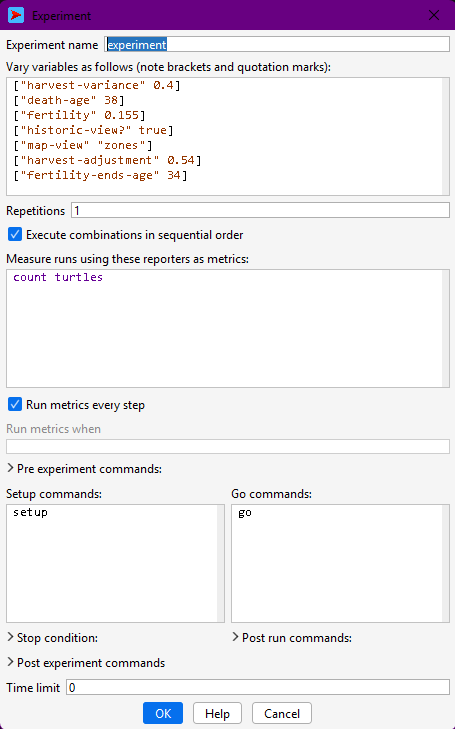

31 Using NetLogo’s Behaviour Space
In this chapter, we will learn the basics about how to set up and run simulation experiments using NetLogo’s Behavior Space. We will go from “playing with a model” to doing systematic computational experiments.
First of all, you should know that “experiments” within this context mean a batch of simulations (a.k.a. simulation runs) that contains a certain pattern of variation for parameter configurations or model design alternatives. The main goal of an simulation experiment is the exploration of a part of the model’s parameter space, that is, to observe the effects of varying parameters (or design aspects regulated as parameters) on the selected output or observation variables.
Parameter space
the space of all possible parameter values that define a particular mathematical model
Example:
A simple model of health deterioration after developing lung cancer could include the two parameters, sex and smoker/non-smoker, in which case the parameter space is the following set of four possibilities: {(Male, Smoker), (Male, Non-smoker), (Female, Smoker), (Female, Non-smoker)}.
In this case, we would want to explore each quadrant of the parameter space (i.e., each combination of sex and smoker/non-smoker status) seeking to detect the effect of these two parameters in the individual health (dependent variable). We might find, for example, that both being not smoker and female have a positive effect on health, yet quantify that not smoking has a greater impact.
We will see more concrete examples of this in the next chapter.
We can technically perform such experiments by varying and running each configuration at a time using the model interface, exporting the variables we wish to analyse after each run. However, this task is greatly automatised by Behavior Space. This tool allows us to configure multiple simulations with multiple parameter configurations within the same place, which can be edited and saved to the same model file. Once we give the order one time, the simulations of an experiment will be run consecutively using parallel computation, and saving all predefined output variables to the same dataset file.
We will see in this chapter how to proceed for different types of experiment. However, keep in mind NetLogo’s own documentation and tutorials on Behavior Space.
In sake of simplicity, in this and following chapters, we will refer to the Artifical Anasazi model, included in NetLogo’s model library. For reference, a version of this model with a few experiments already created is stored at: https://github.com/CoDArchLab-ABM/course-guide/blob/main/assets/netlogo/Artificial%20Anasazi_experiments.nlogox
31.1 Workflow
Before you start, always keep in mind the general workflow when doing simulation experiments with NetLogo’s Behavior Space:
⚙️ Model setup: NetLogo model ready
↓
🎛️ Define experiment: BehaviorSpace parameters & setting
↓
▶️ Run experiments: Multiple model runs with varied parameters
↓
💾 Export results: CSV output files
↓
📊 Analyse results: R scripts for plots & statistics
↓
🧩 Interpret results: Compare to hypotheses or data
↺
🔁 Refine model or experiment: Adjust parameters, mechanisms31.2 Creating a new experiment
You can access it in the top bar menu at “Tools > BehaviorSpace” or pressing Crtl+Shif+B. If you now open it in a fresh version of the model, you should see no experiments. Press “New” and you will see a pop-up window:

From top to bottom, a few points are worth highlighting:
- Experiment name: name your experiment according to its pattern of configuration, e.g. “experiment-fertility”. Notice that this name will be used in the name of the file.
- Variables to vary and how: in the second text box, you will specify the variables to explore (i.e. parameters) using a specific syntax:
["variable-name" value](fixed value); e.g.,["death-age" 38]
["variable-name" value1 value2 value3](multiple values); e.g.["harvest-variance" 0.2 0.4 0.41 0.45 0.5 0.8]
["variable-name" minValue maxValue step](multiple values with regular steps); e.g.["harvest-variance" [0.2 0.8 0.2]]
- Repetitions: number of simulations to be run with each configuration. Only use a value greater than one if your model does not control the random seed number; if you do control it, repetitions will yield the same results.
- Reporters: in the fourth text box, you should specify the names of all the variables or calculations you wish to record in the output dataset, always within the observer scope. Write them in separate lines. By default, NetLogo includes a
count turtlescommand as an example, but to keep the link between model code and simulation results, you should always report variables already declared in your code. For this, it is easier and recommended to copy and paste their names from inside theglobals [ ... ]declaration.
- Run metrics every step: Whether you want NetLogo to print all the reporters every time step (✅) or only at the end of the simulation (⬜).
- Pre and post experiment commands, post run commands: Here you can add small scripts specifying extra procedures to be executed in different moments before and after simulations. To see the instructions of each field, with the window selected, move your cursor on top of the field’s title. The instruction text should appear briefly.
- Stop condition and Time limit: if your model does not have a stop condition specified in the code, you may add it here or set an arbitrary number of steps as a limit. Note that it is essential to have a stop condition; if not, your experiment will end only with your machine being out of memory or not at all!
31.3 Single simulation run
Up until now, we have been working with single simulation experiments every time we have executed simulations through a model interface (i.e., every time we run setup and go). This is plenty useful to observe certain aspects of the model dynamics, particularly, the changes we can directly observe in the interface view space and plots.
In the Artificial Anasazi model, a single simulation run corresponds to one possible history of household settlement, farming, movement, and abandonment under a fixed set of assumptions (e.g. fertility, harvest variability, maize productivity).
Running a single configuration in Behavior Space is useful whenever we are outputting values every time step. This kind of data, a “trajectory”, can be analised for:
- checking that the model behaves plausibly (e.g. households farm, move, and sometimes disappear),
- verifying that the chosen reporters (e.g. population size, number of settlements) are correctly recorded,
- establishing a baseline scenario that can later be compared against alternative parameter settings.
To do this, all parameters in the experiment are assigned fixed values and the number of repetitions is set to 1. The resulting output mirrors what you would observe from a single manual run, but in a form that is consistent with later experiments and external analysis.
Given “typical” values for fertility and harvest variability, does the model produce a broadly stable population, or an eventual decline?
Create a Behavior Space experiment with no varying parameters and 1 repetition.
- Run the experiment once.
- Inspect the output file.
- Identify which reported variables describe population, settlements, and time.
What does this single run suggest about the overall behaviour of the system?
31.4 Repetitions under the same parameter configuration
The Artificial Anasazi model includes several stochastic elements, such as variation in harvest success and demographic events. This means that even with identical parameters, two runs may lead to different settlement trajectories or population outcomes.
Running multiple repetitions under the same parameter configuration allows us to:
- quantify the range of possible outcomes (e.g. early collapse vs. long-term persistence),
- estimate average trends in population size or settlement count,
- assess whether observed patterns are robust or driven by chance.
In BehaviorSpace, this is done by increasing the Repetitions value. Each repetition represents a different random realisation of the same underlying assumptions. In archaeological terms, this can be interpreted as exploring multiple plausible histories consistent with the same environmental and behavioural constraints.
Under the same climatic conditions, how variable are population trajectories? Are collapse outcomes rare events or common ones?
Using the same parameter values as before:
- Set the number of repetitions to at least 10.
- Run the experiment.
- Plot or inspect the distribution of final population sizes.
Do all runs behave similarly, or do they diverge substantially?
31.5 Varying parameters
Varying parameters in the Artificial Anasazi model allows us to explore how assumptions about environment and behaviour affect long-term settlement dynamics.
Typical parameters of interest include:
- harvest-variance, representing climatic unpredictability,
- death-age or fertility-related parameters, affecting demographic turnover,
- productivity or carrying-capacity-related variables.
Behavior Space automatically generates all combinations of parameter values. For example, varying harvest variability across several levels allows us to examine how increasing environmental risk influences population stability, mobility, and collapse.
When working with the Anasazi model, parameter variation can be used to:
- test hypotheses about environmental stress,
- explore sensitivity to poorly constrained demographic parameters,
- compare alternative explanations for population decline.
As a rule, parameter exploration ranges should be meaningful rather than exhaustive.
At what level of harvest variability does the simulated population become unstable or collapse?
Create an experiment where harvest-variance takes at least 4 different values.
- Keep all other parameters fixed.
- Use multiple repetitions per value.
- Compare average population trajectories across values.
Is there a clear threshold where behaviour changes qualitatively?
31.6 Selecting output variables
In the Artificial Anasazi model, output variables should be chosen to reflect archaeological observables or theoretical constructs, rather than internal implementation details.
Commonly reported variables include:
- total population size,
- number of households,
- number of occupied settlements,
- aggregated measures of land use or farming success.
These variables are typically declared as globals in the model code and can be directly reported in BehaviorSpace. Reporting such variables makes it easier to link simulation outcomes to archaeological data or interpretive narratives.
You must also decide whether to record outputs:
- only at the end of each run, to compare final states (e.g. persistence vs. collapse), or
- at every time step, to analyse trajectories such as population growth and decline.
The second option is particularly useful when comparing simulated dynamics to diachronic archaeological records.
Do population declines occur gradually or abruptly in the model, and how does this compare to archaeological reconstructions?
Run the same experiment twice:
- recording outputs only at the end of each run;
- recording outputs at every time step.
What kinds of questions can you answer with the second dataset that are impossible with the first?
31.7 Advanced workflows
31.7.1 Using special procedures
You can also write custom procedures to be used within experiments in Behavior Space. For example, to define a stop condition that has multiple, more complex criteria or to generate or save specific outputs in specific points of the simulation.
Such procedures should be clearly documented, as they introduce experiment-specific logic into the model.
Can we trace which specific runs (rather than average behaviour) produce extreme outcomes such as rapid abandonment?
Inspect the output data of the Artificial Anasazi and identify runs with extreme outcomes (e.g. earliest collapse).
- How many such runs are there?
- Do they share the same parameter values?
What does this tell you about determinism and contingency in the model?
31.7.2 Output extra files
Some analyses might require we save outputs in separate CSV files.We have already seen an example of this when exporting the routes calculated in the Messara Trade model. In other occasions, we might need more detailed outputs than a CSV file can provide—for example, spatial snapshots of settlement locations or land-use patterns.
Using NetLogo’s file output primitives, such as export-world or export-view, we can easily save complex spatial or distributed data. In the Artifical Anasazi, for example, it is possible to export:
- settlement locations at specific time steps,
- spatial grids of resource availability,
- intermediate states before collapse or abandonment.
When doing so, file names should include the experiment name or parameter values to ensure traceability between files and Behavior Space results. For example:
let filePath (word "experiments/Artificial Anasazi_" behaviorspace-experiment-name "_randomSeed=" SEED ".txt")
file-open filePath
;;; write data
...
file-closeWhere in the landscape does abandonment begin, and does it spread spatially or occur everywhere at once?
If spatial outputs are available:
- Extract settlement locations from two different runs.
- Compare their spatial patterns at the same simulation time.
Do similar outcomes arise from similar spatial processes?
31.7.3 Running settings from file
For large experimental designs, parameter values for the Artificial Anasazi model can be defined externally (e.g. in CSV files) and read by the model at runtime. This approach supports:
- transparent and reproducible experimental designs,
- integration with statistical tools that generate parameter sets,
- comparison between NetLogo experiments and other modelling approaches.
Although this goes beyond introductory use of Behavior Space, it reflects common practice in archaeological simulation studies. We will see an example of this in the next chapter.
How do results change when parameter combinations are sampled systematically rather than chosen manually?
Design a hypothetical experiment with many parameters.
- Which parameters would you prioritise?
- Which would you keep fixed, and why?
Discuss your choices in terms of archaeological uncertainty and interpretability.